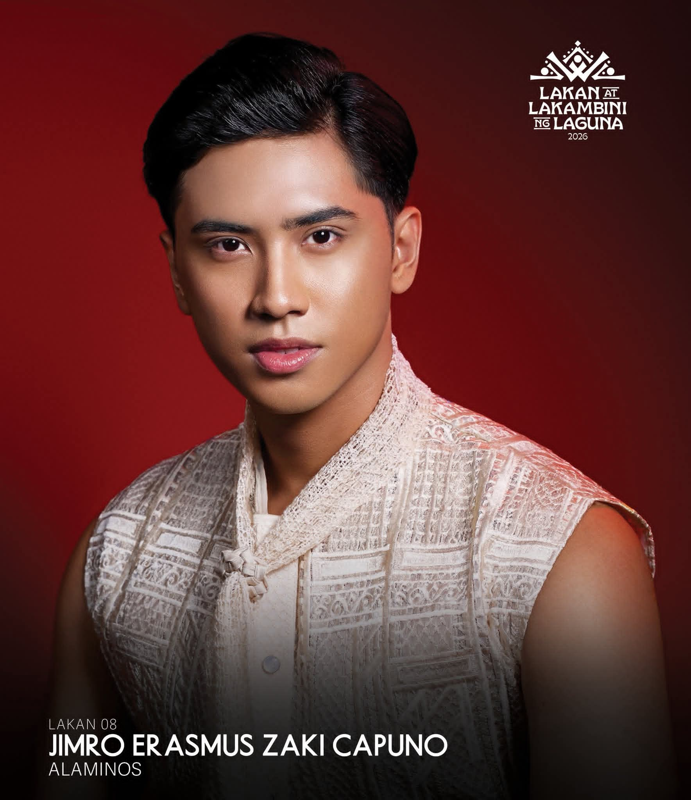

Zaki Capuno – Lakan ng Alaminos 2025 | BSIS Graduate, Best Paper Awardee & Tech Advocate from Alaminos, Laguna

Zaki Capuno 🏆 Lakan ng Alaminos 2025
Zaki Capuno · The Tech-Savvy Pageant King
Full name
Jimro Erasmus Zaki Villanueva Capuno
Born
August 8, 2002 (age 23) · Alaminos, Laguna, PH
Height
5'10" (178 cm)
Education
BS Information Systems, National University Laguna (Graduate)
Pageant Titles
👑 Lakan ng Alaminos 2025 (Winner)
🏅 Top 15 Finalist – Lakan ng Laguna 2026
🥈 Mr. SunStar 2025 – 2nd Runner Up
🏅 Top 15 Finalist – Lakan ng Laguna 2026
🥈 Mr. SunStar 2025 – 2nd Runner Up
Research Award
Best Paper Award – "Integrated Enterprise Asset Management System for Construction Industry" (co-author)
Advocacy
Tech-driven tourism: using information systems to preserve and promote Alaminos & Laguna's cultural heritage and local economy.
Talents
Guitar, drums, singing, badminton, basketball enthusiast
Zaki Capuno is a multi-talented Filipino pageantry titleholder, model, and tech advocate. After being crowned Lakan ng Alaminos 2025, he proved that intelligence and charm go hand in hand. A BS Information Systems graduate from National University Laguna, he co-authored a Best Paper award-winning research on an Enterprise Asset Management System. He competed in Lakan ng Laguna 2026 (Top 15) and uses his platform to champion technology-driven tourism. Beyond pageantry, he plays guitar, drums, and badminton, and is a passionate community organizer. His mission: to show that pageantry can be a force for digital and cultural progress.
Tech Advocate · Lakan ng Alaminos 2025 · Best Paper Awardee